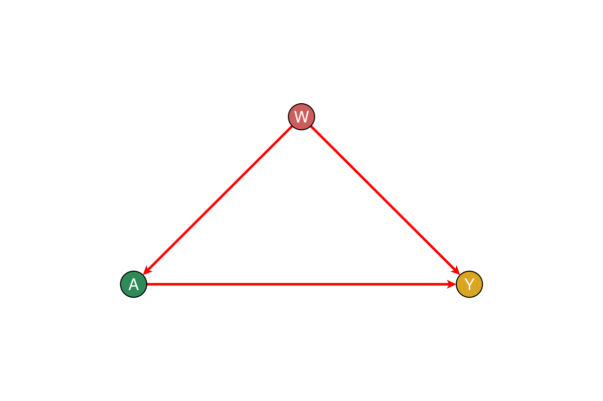
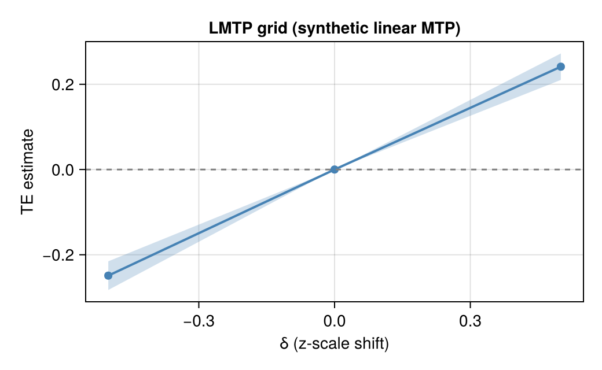

CausalTargeted.jl
CausalTargeted implements cross-fitted targeted estimators for continuous and longitudinal exposures: longitudinal modified treatment policies (LMTP), interventional mediation (TE / NDE / NIE under MTP), positivity diagnostics, nested Monte Carlo stability checks, and omitted-confounder sensitivity. Defaults favour small-to-moderate sample sizes.
Identification is delegated to CausalDynamics.jl. This package estimates parameters once a query and adjustment set are known.
Compared with R and Python
| Need | CausalTargeted | Familiar elsewhere |
|---|---|---|
| LMTP / MTP δ-grids | Yes | R lmtp, Python Ananke |
| Interventional mediation (TE/NDE/NIE) | Yes | R crumble / tmle3 |
| Consumes upstream ID certificate | Unique | Partial |
| Small-n Super Learner profiles | Yes | sl3 + glue |
Choose CausalTargeted for Julia-native grids with typed hand-off from IdentificationResult. Prefer lmtp / Ananke when the rest of the pipeline is already R or Python. Details: Comparison · ECOSYSTEM_COMPARISON.md.
Related packages
| Package | Role |
|---|---|
| CausalDynamics | Graphs, identify, temporal unrolling, IdentificationResult |
| CausalTargeted | Nuisances, LMTP grids, certificates, small-n profiles |
| CausalMediation | Mediation EIF / TE / NDE / NIE (optional weakdep; using CausalMediation) |
| DAGMakie | Optional DAG figures (via CausalDynamics plotting façades) |
| Application repos | Cohort data, registries, concordance (thin) |
Design notes: DESIGN.md · NAMING.md · BOUNDARIES.md · ecosystem principles.
Methods and literature
- Comparison — Julia vs R (
lmtp,crumble) and Python (Ananke, DoubleML) - Methods and literature — LMTP, mediation, Super Learner, positivity, sensitivity
- Small-n checklist — defaults for tens to low hundreds of units
- References — bibliographic list with DOIs
Canonical sources include Díaz et al. (2023) on LMTP; Díaz & Hejazi (2020) and Liu et al. (2024) on stochastic / modern mediation; van der Laan & Rose on TMLE / Super Learner; and Cinelli & Hazlett (2020) on partial-R² sensitivity. BibTeX keys such as diaz2023lmtp live in the CDCS book references.bib.
Quick start
Point-treatment LMTP under baseline confounding uses the DAG below (W → A → Y, W → Y). Identification sets come from CausalDynamics; figures use the optional DAGMakie bridge.
using CausalTargeted, CausalDynamics, Graphs, DAGMakie, CairoMakie
g = DiGraph(3)
add_edge!(g, 1, 2) # W → A
add_edge!(g, 1, 3) # W → Y
add_edge!(g, 2, 3) # A → Y
fig = plot_backdoor_paths(g, 2, 3; node_labels = ["W", "A", "Y"])
fig
df, _ = simulate_linear_mtp(200)
opts = recommend_run_options(size(df, 1); engine = :lmtp)
grid = run_lmtp_grid(
df, :A, :Y;
baseline = [:W],
deltas = [-0.5, 0.0, 0.5],
folds = opts.folds,
learners_outcome = opts.learners_outcome,
learners_trt = opts.learners_trt,
parallel = false,
positivity = opts.positivity,
simultaneous = false,
)
fig = Figure(size = (520, 320))
ax = Axis(fig[1, 1];
xlabel = "δ (z-scale shift)",
ylabel = "TE estimate",
title = "LMTP grid (synthetic linear MTP)",
)
band!(ax, grid.delta, grid.lwr, grid.upr; color = (:steelblue, 0.25))
lines!(ax, grid.delta, grid.est; color = :steelblue, linewidth = 2)
scatter!(ax, grid.delta, grid.est; color = :steelblue, markersize = 10)
hlines!(ax, [0.0]; color = :gray, linestyle = :dash)
fig
Installation
From the CDCS monorepo:
using Pkg
Pkg.develop(path="packages/CausalTargeted.jl")
using CausalTargetedSee also
Worked examples appear in the CDCS book and in application repositories. Prefer package APIs over copying application column names.